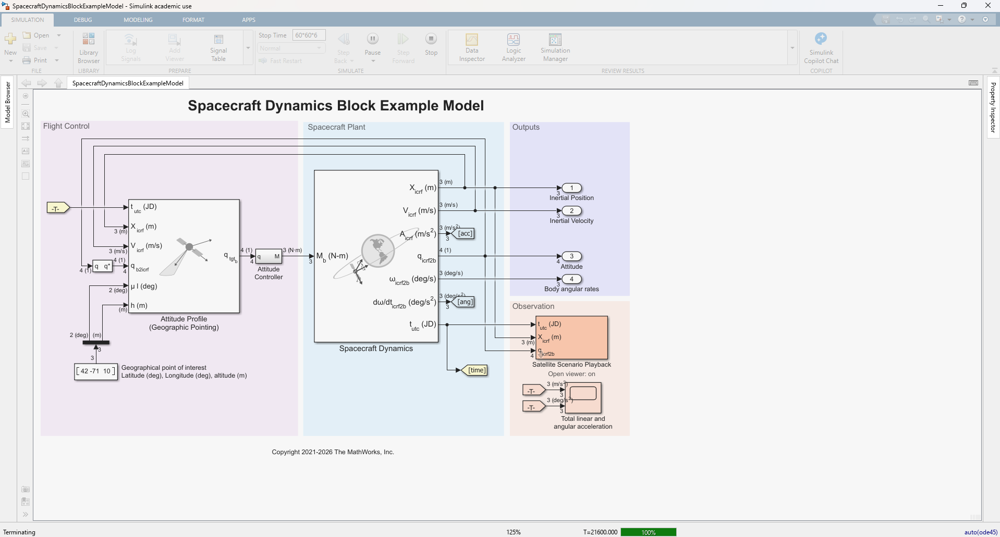

Spacecraft Dynamics
Plant Model in MATLAB
& Simulink
A 6-DoF rigid-body spacecraft plant model built on the Aerospace Blockset Spacecraft Dynamics block

1. What Is the Spacecraft Plant Model?
Where the reduced-order UAV model treats the vehicle as a kinematic point-mass under an assumed autopilot, the spacecraft plant model is a full six-degrees-of-freedom (6-DoF) rigid-body propagator. It integrates the coupled translational and rotational equations of motion to compute the position, velocity, attitude, and angular velocity of one or more spacecraft over time.
This model is built around the MATLAB/Simulink Aerospace Blockset Spacecraft Dynamics block. In control-systems terms it is the plant: given the external forces and moments acting on the vehicle (thrust, gravity, drag, solar radiation pressure, control torques), it returns the resulting state trajectory that a guidance, navigation, and control (GNC) system is designed to steer.
Source: Technical details in this post follow the MathWorks documentation, “Getting Started with the Spacecraft Dynamics Block” (Aerospace Blockset). See mathworks.com/help/aeroblks for the authoritative reference.
2. Architecture & Block Overview
+-------------------------------------------------------+
INPUT PORTS | SPACECRAFT DYNAMICS BLOCK (6-DoF) | OUTPUT PORTS
- Body Force (F_b)->| |---> Position (r) [ICRF / fixed]
- Body Moment (M_b)->| +-----------------------------------------------+ |---> Velocity (v) [ICRF / fixed]
- Ext. Accel (a_e)->| | TRANSLATIONAL DYNAMICS (r, v) | |---> Attitude (q / DCM / Euler)
| | a = F_b/m + a_grav + a_3rd + a_drag + a_srp | |---> Ang. Velocity (ω)
MASS PROPERTIES | +-----------------------------------------------+ |
- Mass (m) ---->| | |---> Inertial Accel (diag.)
- Inertia (I) ---->| v |---> Angular Accel (diag.)
- dm/dt, dI/dt ---->| +-----------------------------------------------+ |
(variable mass) | | ROTATIONAL DYNAMICS (q, ω) | |
| | Iω̇ = M_b - ω x (Iω) - İω ; q̇ = ½Ω(ω)q | |
| +-----------------------------------------------+ |
| Central body: Earth / Moon / Mars / ... |
+-------------------------------------------------------+The block simultaneously advances the translational state (r, v) and the rotational state (q, ω) using a numerical ODE solver, with an optional variable-mass model coupling the two.
3. Reference Frames
Correctly interpreting the inputs and outputs requires knowing which coordinate system each quantity lives in. The block works across several standard frames:
| Frame | Abbrev. | Description |
|---|---|---|
| Inertial Celestial Reference | ICRF | Quasi-inertial frame used for integration of the equations of motion (position, velocity, attitude reference). |
| Planet Fixed-Frame | ITRF / ME | Rotates with the central body (ITRF for Earth, Mean-Earth/ME for the Moon). Used for ground-relative outputs. |
| Body Frame | Body | Attached to the spacecraft; body forces Fb, moments Mb, and the inertia tensor I are expressed here. |
| Local-Vertical Local-Horizontal | LVLH | Orbit-relative frame (radial / along-track / cross-track), useful for relative motion and attitude reference. |
| North-East-Down | NED | Local geographic frame for attitude relative to the planet surface. |
Transformation from the body frame to the inertial frame is performed with the attitude quaternion: aicrf = quatrotate(qb→icrf, ab).
4. Inputs, Outputs & States
4.1 Input Ports
| Signal | Symbol | Frame | Description |
|---|---|---|---|
| Body Force | Fb | Body | Net applied force (e.g., thrust) in body-fixed coordinates. |
| Body Moment | Mb | Body | Net applied torque about the body axes (reaction wheels, thrusters, control torques). |
| External Acceleration | ae | ICRF / fixed | Optional perturbing accelerations (drag, third-body, SRP) supplied externally. |
| Mass / Inertia | m, I | Body | Current mass and inertia tensor (variable-mass modes). |
| Mass Rates | ṁ, İ | Body | Rate of change of mass / inertia for custom variable-mass modeling. |
4.2 Output Ports
- Position (r): in ICRF or fixed-frame (m).
- Velocity (v): in ICRF or fixed-frame (m/s).
- Attitude: quaternion q (scalar-first), direction cosine matrix (DCM), or Euler angles — referenced to ICRF, fixed-frame, NED, or LVLH.
- Angular Velocity (ω): body rates (rad/s).
- Inertial Acceleration (diagnostic): total acceleration including gravity (m/s2).
- Angular Acceleration (diagnostic): total angular acceleration (rad/s2).
5. Translational Dynamics
The inertial acceleration of the spacecraft is the sum of the body force mapped into the inertial frame plus all environmental accelerations:
aicrf = body2inertial(Fbm) + aapplied + agravity + a3rd + adrag + asrp
Velocity and position follow by numerical integration: ṙ = v and v̇ = aicrf.
5.1 Gravity Models
- Point-mass: agravity = −μ ricrf|ricrf|3, where μ is the central-body gravitational parameter.
- Oblate ellipsoid (J2): adds the second-degree zonal harmonic, capturing the dominant effect of planetary flattening (orbital plane and perigee precession).
- Spherical harmonics: higher-order gravity field (up to degree/order 360 for Earth EGM2008) for high-fidelity orbit propagation.
5.2 Perturbation Accelerations
Atmospheric drag:
adrag = −12 ρ CD Am |vrel| vrel
Third-body gravity (e.g., Sun and Moon on an Earth orbit):
a3rd = μ3 ( rsat,3|rsat,3|3 − r3|r3|3 )
Solar radiation pressure (SRP):
asrp = −ν Cr Asm psrp ( AUrsun )2 r̂sat,sun
where ν is the shadow (eclipse) factor and Cr the reflectivity coefficient.
6. Rotational Dynamics
The attitude of the rigid body evolves under Euler's rotational equation. Solving for the angular acceleration:
ω̇ = I−1[ Mb − ω × (I ω) − İ ω ]
The gyroscopic term ω × (I ω) couples the three body axes, while İ ω accounts for a changing inertia tensor under variable mass.
Attitude is propagated as a quaternion to avoid gimbal-lock singularities. The quaternion kinematic equation is:
| 0 | −ωx | −ωy | −ωz |
| ωx | 0 | ωz | −ωy |
| ωy | −ωz | 0 | ωx |
| ωz | ωy | −ωx | 0 |
The output attitude can be delivered as this quaternion, an equivalent 3×3 DCM, or an Euler-angle sequence (ZYX, ZXZ, etc.).
7. Mass Properties
The block supports three mass-modeling fidelities, which is critical for maneuvers that burn propellant:
| Mode | What You Provide | Behavior |
|---|---|---|
| Fixed Mass | m, I (constant) | ṁ = 0, İ = 0 for the whole run. |
| Simple Variable Mass | ṁ input, empty/full config | Mass integrates from ṁ; inertia interpolates linearly (below). |
| Custom Variable Mass | m, ṁ, I, İ | Full user control of the mass/inertia time history. |
For the simple variable-mass mode, the inertia tensor is interpolated between the empty and full configurations as a function of current mass:
I = Ifull − Iemptymfull − mempty (m − mempty) + Iempty
8. Central Body & Initial Conditions
The central body is selectable — Earth, Moon, Mars, Jupiter, Saturn, Uranus, Neptune, or a custom body — which sets μ, the fixed-frame definition, and the reference ellipsoid. For Earth, optional Earth Orientation Parameter (EOP) data refines the ICRF ↔ ITRF transformation.
Initial conditions can be specified in several equivalent formats:
- Keplerian elements: semi-major axis a, eccentricity e, inclination i, RAAN Ω, argument of periapsis ω, true anomaly ν.
- Modified Keplerian: special-case handling for circular, equatorial, or circular-equatorial orbits.
- State vectors: position and velocity directly, in ICRF or fixed-frame.
9. Constellation Modeling
A single block can propagate multiple spacecraft simultaneously. Parameter arrays expand automatically across the constellation, while a single scalar value broadcasts to all vehicles. (Exception: Moon libration angles and spin-axis orientation remain global and are not expanded per vehicle.) This makes the block well-suited to formation-flying and mega-constellation studies without duplicating the model.
10. Numerical Integration Notes
For the most accurate orbit and attitude propagation, use a variable-step solver with a tight relative tolerance (below 1×10−8). Looser tolerances run faster but accumulate error over many orbits.
Because orbital periods span minutes to hours while attitude dynamics can be much faster, a variable-step solver adapts the step size to resolve both scales efficiently.
11. Plant Model Summary
| Characteristic | Spacecraft Dynamics Plant Model |
|---|---|
| Fidelity | Full 6-DoF rigid body (coupled translation + rotation) |
| States | Position r, velocity v, attitude q, angular velocity ω |
| Inputs | Body force Fb, body moment Mb, external accelerations, mass properties |
| Environment | Point-mass / J2 / spherical-harmonic gravity, drag, third-body, SRP |
| Attitude Output | Quaternion, DCM, or Euler angles (ICRF / fixed / NED / LVLH) |
| Primary Use Case | Orbit propagation, attitude dynamics, GNC plant, constellation simulation |
In short, the spacecraft plant model is the high-fidelity dynamical “truth” that a spacecraft GNC design is built and tested against — the orbital-scale counterpart to the reduced-order fixed-wing UAV guidance model.